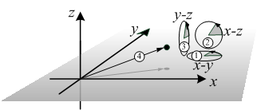

java.lang.Object
basics.math.rot.RotoTranslation
- Direct Known Subclasses:
RotoTranslationMatrix,RotoTranslationQuaternion
public abstract class RotoTranslation
extends java.lang.Object
An abstract object that encapsulates a rotation and translation in three dimensions.
Note: the numbers indicate the sequence, in which the rotations and translation are applied.
- Author:
- Jörg Roth (Joerg.Roth@Wireless-earth.org)
-
Field Summary
Fields Modifier and Type Field Description static intMODE_DEFAULTFor create... methods: create with default mode.static intMODE_MATRIXFor create... methods: create with rotation modelled as matrix.static intMODE_QUATERNIONFor create... methods: create with rotation modelled as quaternion.protected double[]translation -
Constructor Summary
Constructors Constructor Description RotoTranslation() -
Method Summary
Modifier and Type Method Description static RotoTranslationcreate()Create a roto-translation without any effect, i.e. null rotation and null translation.static RotoTranslationcreate(double[] translation)Create a roto-translation with null rotation and only translation.static RotoTranslationcreate(double[][] rotation, double[] translation)Create a roto-translation.static RotoTranslationcreate(double[][] rotation, double[] translation, int mode)Create a roto-translation.static RotoTranslationcreate(double[] translation, int mode)Create a roto-translation with null rotation and only translation.static RotoTranslationcreate(double movX, double movY, double movZ, double angYZ, double angXZ, double angXY)Create a roto-translation.static RotoTranslationcreate(double movX, double movY, double movZ, double angYZ, double angXZ, double angXY, int mode)Create a roto-translation.static RotoTranslationcreate(int mode)Create a roto-translation without any effect, i.e. null rotation and null translation.static RotoTranslationcreate(RotoTranslation rt)Copying constructor - all internal structures are deeply copied.static RotoTranslationcreate(RotoTranslation rt, int mode)Copying constructor - all internal structures are deeply copied.static RotoTranslationcreate(RotoTranslation rt1, RotoTranslation rt2)Create a total roto-translation of two separate roto-translations.static RotoTranslationcreate(RotoTranslation rt1, RotoTranslation rt2, int mode)Create a total roto-translation of two separate roto-translations.static RotoTranslationcreateFromDenavitHartenbergParameters(double theta, double d, double a, double alpha)Create a roto-translation from Denavit-Hartenberg parameters.static RotoTranslationcreateFromDenavitHartenbergParameters(double theta, double d, double a, double alpha, int mode)Create a roto-translation from Denavit-Hartenberg parameters (seecreateFromDenavitHartenbergParameters(double,double,double, double).static RotoTranslationcreateFromHomogeneousMatrix(double[][] homogeneous)Create a roto-translation from a homogeneous matrix.static RotoTranslationcreateFromHomogeneousMatrix(double[][] homogeneous, int mode)Create a roto-translation from a homogeneous matrix.double[]getDenavitHartenbergParameters(boolean check)Get the Denavit-Hartenberg parameters from this roto-translation.abstract double[]getEulerAngles()Get the rotation angles, if the rotation is applied in the ordering x-y-plane – x-z-plane – y-z-plane.abstract double[]getEulerAnglesReverse()Get the rotation angles in reverse order (compared togetEulerAngles()), i.e.double[][]getHomogeneousMatrix()Get the homogeneous matrix from this roto-translation.abstract double[][]getRotationMatrix()Get the rotation matrix.double[]getTranslation()Get the translation vector.abstract RotoTranslationinverse()Creates a roto-translation that represents the inverse mapping.abstract double[]rotate(double[] point)Rotate a point (i.e. only apply rotation, ignore translation).abstract double[]rotateInverse(double[] point)Rotate a point with inverse function (i.e. only apply inverse rotation, ignore translation).abstract double[]rotoTranslate(double[] point)Roto-translate a point.abstract double[]rotoTranslateInverse(double[] point)Roto-translate a point with inverse function.RotoTranslationMatrixtoRotoTranslationMatrix()Convert this rotation to an instance of RotoTranslationMatrix.RotoTranslationQuaterniontoRotoTranslationQuaternion()Convert this rotation to an instance of RotoTranslationQuaternion.
-
Field Details
-
MODE_MATRIX
public static final int MODE_MATRIXFor create... methods: create with rotation modelled as matrix.- See Also:
- Constant Field Values
-
MODE_QUATERNION
public static final int MODE_QUATERNIONFor create... methods: create with rotation modelled as quaternion.- See Also:
- Constant Field Values
-
MODE_DEFAULT
public static final int MODE_DEFAULTFor create... methods: create with default mode.- See Also:
- Constant Field Values
-
translation
protected double[] translation
-
-
Constructor Details
-
RotoTranslation
public RotoTranslation()
-
-
Method Details
-
create
Create a roto-translation without any effect, i.e. null rotation and null translation.- Returns:
- roto-translation
-
create
Create a roto-translation without any effect, i.e. null rotation and null translation.- Parameters:
mode- see MODE... constants- Returns:
- roto-translation
-
create
Create a roto-translation with null rotation and only translation.- Parameters:
translation- translation vector (3)- Returns:
- roto-translation
-
create
Create a roto-translation with null rotation and only translation.- Parameters:
translation- translation vector (3)mode- see MODE... constants- Returns:
- roto-translation
-
create
Create a roto-translation.- Parameters:
rotation- rotation matrix (3 x 3)translation- translation vector (3)- Returns:
- roto-translation
-
create
Create a roto-translation.- Parameters:
rotation- rotation matrix (3 x 3)translation- translation vector (3)mode- see MODE... constants- Returns:
- roto-translation
-
create
public static RotoTranslation create(double movX, double movY, double movZ, double angYZ, double angXZ, double angXY)Create a roto-translation.- Parameters:
movX- the translation in x-directionmovY- the translation in y-directionmovZ- the translation in z-directionangYZ- rotation angle in radians in the y-z-planeangXZ- rotation angle in radians in the x-z-planeangXY- rotation angle in radians in the x-y-plane- Returns:
- roto-translation
-
create
public static RotoTranslation create(double movX, double movY, double movZ, double angYZ, double angXZ, double angXY, int mode)Create a roto-translation.- Parameters:
movX- the translation in x-directionmovY- the translation in y-directionmovZ- the translation in z-directionangYZ- rotation angle in radians in the y-z-planeangXZ- rotation angle in radians in the x-z-planeangXY- rotation angle in radians in the x-y-planemode- see MODE... constants- Returns:
- roto-translation
-
create
Create a total roto-translation of two separate roto-translations.- Parameters:
rt1- first roto-translation to be appliedrt2- second roto-translation to be applied- Returns:
- roto-translation
-
create
Create a total roto-translation of two separate roto-translations.- Parameters:
rt1- first roto-translation to be appliedrt2- second roto-translation to be appliedmode- see MODE... constants- Returns:
- roto-translation
-
create
Copying constructor - all internal structures are deeply copied. If the given roto-translation is of another type (e.g. RotoTranslationQuaternion), the structure first is converted.- Parameters:
rt- roto-translation to be copied- Returns:
- roto-translation
-
create
Copying constructor - all internal structures are deeply copied. If the given roto-translation is of another type (e.g. RotoTranslationQuaternion), the structure first is converted.- Parameters:
rt- roto-translation to be copiedmode- see MODE... constants- Returns:
- roto-translation
-
createFromDenavitHartenbergParameters
public static RotoTranslation createFromDenavitHartenbergParameters(double theta, double d, double a, double alpha)Create a roto-translation from Denavit-Hartenberg parameters. The parameters assume a transformation of reference systems xi-1, yi-1, zi-1 to xi, yi, zi, wheras- each zi is along the motion axis, i.e., the rotation axis of rotation joint or the moving axis of sliding joint,
- xi is perpendicular both to zi-1 as well as to zi,
- xi intersects both zi-1 as well as zi,
- yi forms a right-handed coordinate system with xi, zi.
- Parameters:
theta- joint-angle θ: rotation around zi-1 to align xi-1 to xid- joint distance d: translation along zi-1 to get to the intersection of zi-1 and xia- arm length a: translation along xi to map zero point i-1 to zero point ialpha- torsion angle α: rotation around xi to align zi-1 to zi- Returns:
- roto-translation
-
createFromDenavitHartenbergParameters
public static RotoTranslation createFromDenavitHartenbergParameters(double theta, double d, double a, double alpha, int mode)Create a roto-translation from Denavit-Hartenberg parameters (seecreateFromDenavitHartenbergParameters(double,double,double, double).- Parameters:
theta- joint-angle θ: rotation around zi-1 to align xi-1 to xid- joint distance d: translation along zi-1 to get to the intersection of zi-1 and xia- arm length a: translation along xi to map zero point i-1 to zero point ialpha- torsion angle α: rotation around xi to align zi-1 to zimode- see MODE... constants- Returns:
- roto-translation
-
createFromHomogeneousMatrix
Create a roto-translation from a homogeneous matrix.- Parameters:
homogeneous- homogeneous matrix- Returns:
- roto-translation
-
createFromHomogeneousMatrix
Create a roto-translation from a homogeneous matrix.- Parameters:
homogeneous- homogeneous matrixmode- see MODE... constants- Returns:
- roto-translation
-
inverse
Creates a roto-translation that represents the inverse mapping. This means, afterdouble[] y=rt.rotoTranslate(x); double[] x2=rt.inverse().rotoTranslate(y);
x and y are practically equal.- Returns:
- the inverse
-
rotoTranslate
public abstract double[] rotoTranslate(double[] point)Roto-translate a point.- Parameters:
point- point- Returns:
- roto-translated point
-
rotate
public abstract double[] rotate(double[] point)Rotate a point (i.e. only apply rotation, ignore translation).- Parameters:
point- point- Returns:
- rotated point
-
rotoTranslateInverse
public abstract double[] rotoTranslateInverse(double[] point)Roto-translate a point with inverse function. This means, afterdouble[] x=... double[] y=rt.rotoTranslateInverse(rt.rotoTranslate(x));
x and y are practically equal.- Parameters:
point- point- Returns:
- inverse roto-translated point
-
rotateInverse
public abstract double[] rotateInverse(double[] point)Rotate a point with inverse function (i.e. only apply inverse rotation, ignore translation). This means, afterdouble[] x=... double[] y=rt.rotateInverse(rt.rotate(x));
x and y are practically equal.- Parameters:
point- point- Returns:
- inverse rotated point
-
getTranslation
public double[] getTranslation()Get the translation vector.- Returns:
- translation vector (3)
-
getRotationMatrix
public abstract double[][] getRotationMatrix()Get the rotation matrix.- Returns:
- rotation matrix (3 x 3)
-
getEulerAngles
public abstract double[] getEulerAngles()Get the rotation angles, if the rotation is applied in the ordering x-y-plane – x-z-plane – y-z-plane.- Returns:
- array of three angles with [0]: angYZ rotation angle in radians in the y-z-plane, [1]: angXZ rotation angle in radians in the x-z-plane [2]: angXY rotation angle in radians in the x-y-plane,
-
getEulerAnglesReverse
public abstract double[] getEulerAnglesReverse()Get the rotation angles in reverse order (compared togetEulerAngles()), i.e. if the rotation is applied in the ordering y-z-plane – x-z-plane – x-y-plane.- Returns:
- array of three angles with [0]: angYZ rotation angle in radians in the y-z-plane, [1]: angXZ rotation angle in radians in the x-z-plane [2]: angXY rotation angle in radians in the x-y-plane,
-
getHomogeneousMatrix
public double[][] getHomogeneousMatrix()Get the homogeneous matrix from this roto-translation.- Returns:
- homogeneous matrix
-
getDenavitHartenbergParameters
public double[] getDenavitHartenbergParameters(boolean check)Get the Denavit-Hartenberg parameters from this roto-translation. This only is reasonable, if the roto-translation actually was generated as Denavit-Hartenberg roto-translation, e.g., usingcreateFromDenavitHartenbergParameters(double,double,double,double).- Parameters:
check- if true, this method checks if the roto-translation actually was a Denavit-Hartenberg roto-translation, if not, throw an exception- Returns:
- array of 4 with theta, d, a, alpha
-
toRotoTranslationQuaternion
Convert this rotation to an instance of RotoTranslationQuaternion. If this instance already is of this class, only the actual reference is returned- Returns:
- RotoTranslationQuaternion object
-
toRotoTranslationMatrix
Convert this rotation to an instance of RotoTranslationMatrix. If this instance already is of this class, only the actual reference is returned- Returns:
- RotoTranslationMatrix object
-